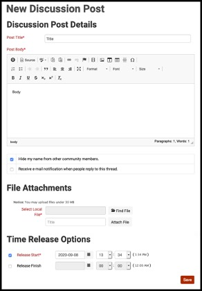

MedLearn Communities - GME The Shelter User Guide
Purpose
The Shelter is a project that has been proposed by many Mental Health Professionals with many decades of experience in helping medical residents to cope with the stress of current issues within the medical field as it relates to COVID-19. The purpose of the Shelter is to allow residents and fellows to connect with fellow colleagues with the intent of finding social support, validation, an ear to be heard, and a place where they can learn about techniques for coping and healing.
The platform that this forum will live in is the communities’ section within MedLearn. MedLearn is the University of Arizona’s College of Medicine –Tucson online learning management platform that is used by medical students and others within the college.
This user guide will assist users with logging into the Shelter community within MedLearn, view anouncements, and post/reply and view discussions.
Using the Shelter community
Log in via direct link to the Shelter
The Shelter will be housed in an area of MedLearn called communities. One of the ways to log into the Shelter would be via the direct link. To log into the Shelter via the direct link:
- Navigate to Online Shelter Site
- Click login via UA NetId WebAuth
- You will see the homepage for the Shelter Community

Log into the Shelter via MedLearn
The second way to log into the Shelter is via MedLearn. To Log into the Shelter via MedLearn:
- Navigate to MedLearn by clicking here
- Click login via UA NetID Webauth
- Login with your NetID and Password
- Click the Communities tab
- Click here in the My Communities menu

- You will see the homepage for the Shelter Community
Viewing Announcements
Members will be able to view announcements posted to the community by administrators of the community. To read these announcements:
- On the community homepage
- Click the Announcements tab at the top of the page

- The announcements will be listed on this page you can click on the individual announcement to view the announcement fully
Posting announcements
If the community administrators want to allow members to post announcements they will be provided with an announcements page specifically for member posted announcements. It is up to the administrator but announcements will need to be approved before approved. To post an announcement:
- From the main homepage
- Click the Announcements tab
- Click add Announcement

- Enter an announcement title in the Announcement Title field
- Type the announcement in the Announcement Body field
- Check whether or not to notify announcements
- Set the time release options
- Click save

- The form will be submitted for approval. Once it is approved the announcement will be posted
Reading Discussion Threads
Members will be able to take part in discussions within the Shelter community. To read discussion threads:
- From the Online Shelter homepage
- Click the Discussions Tabs
- In the discussions area click on the discussion thread you wish to read

- Click the post you wish to read

- You can read the posts

Posting New Discussion Threads
As a community member you will be allowed to post new threads to discussions. To add new posts to a discussion:
- From the discussion you wish to create a new post
- Click New Post

- Enter your post title in the Post Title field
- Enter the post body in the Post Body field
- Check the “Hide my name from Community Members” field – This is very important to conserve Annonmity.
- Decide if you want to receive e-mail notifications when people reply
- Attach files if you want
- Enter time release options
- Click Save
 - Your post will be saved

Replying to Discussions
As a community member you will be allowed to reply to discussion posts. To reply to a post:
- Click reply to post

- Enter your post in the Post Body
- Check “Hide my name from other community members” so you can conserve anonymity
- Decide if you want to receive e-mails when people reply to this thread
- Attach files if you want
- Determine time options
- Click Reply

- The reply is posted